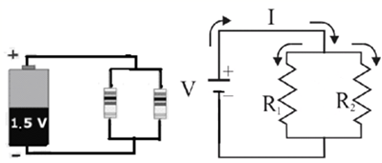
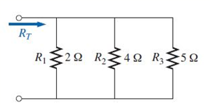
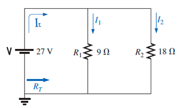
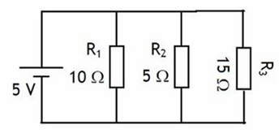

Circuitos eléctricos en paraleloOtro tipo de circuito eléctrico es el Circuito eléctrico en paralelo, en este tipo de circuitos los elementos que consumen energía eléctrica (televisores, focos, celulares, etc.) se colocan de tal forma todas las entradas de los dispositivos se conectan a un mismo punto, mientras que todas las salidas de los dispositivos se conectan juntas a otro punto.
Este tipo de circuitos posee las siguientes características:
⦁ Presenta varios caminos para el paso de los electrones. Por lo que la intensidad de corriente total que pasa por el circuito es igual a la suma de las corrientes que pasan por cada uno de los elementos.
⦁ La resistencia total del circuito es inversamente proporcional a la suma de las resistencias individuales de los elementos.
⦁ El voltaje total del circuito es igual a los voltajes que hay en cada uno de los elementos. Los voltajes individuales dependen del valor de las resistencias individuales y de la intensidad de corriente total (o individual).
Las fórmulas a utilizar son:
\(\displaystyle {I}_{T}={I}_{1}+{I}_{2}+{I}_{3}+... \)
\(\displaystyle {R}_{T}=\frac{1}{\frac{1}{{R}_{1}}+\frac{1}{{R}_{2}}+\frac{1}{{R}_{3}}+...} \)
\(\displaystyle {V}_{T}={V}_{1}={V}_{2}={V}_{3}=… \)
Donde
\(I_T, R_T, V_T\) son la intensidad de corriente total, resistencia eléctrica total, voltaje total
\(I_1, I_2, I_3, ...\) son la intensidad de corriente en cada elemento
\(R_1, R_2, R_3, ...\) son la resistencia eléctrica en cada elemento
\(V_1, V_2, V_3, ...\) son el voltaje en cada elemento
Su representación es

Donde:
\(V\) = diferencia de potencial aplicado a los extremos del conductor en volts (V)
\(R\) = resistencia del conductor en ohms (Ω)
\(I\) = intensidad de la corriente que circula por el conductor en amperes (A)

Ejemplo 1. En el siguiente circuito determine la resistencia total.

Para resolverlo solo sustituimos los valores de las resistencias en la fórmula para la resistencia total de un circuito en paralelo.
\(\displaystyle {R}_{T}=\frac{1}{\frac{1}{{R}_{1}}+\frac{1}{{R}_{2}}+\frac{1}{{R}_{3}}} \)
\(\displaystyle {R}_{T}=\frac{1}{\frac{1}{2}+\frac{1}{4}+\frac{1}{5}} \)
\(\displaystyle {R}_{T}=\frac{1}{0.5+0.25+0.2} \)
\(\displaystyle {R}_{T}=\frac{1}{0.95} \)
\(\displaystyle {R}_{T}=1.053\,\Omega \)
Ejemplo 2. En la siguiente red en paralelo calcular lo siguiente
a) La Resistencia Total
b) La Corriente Total
c) Calcular la corriente en \(I_1\) e \(I_2\).

Resistencia total. Como en el ejemplo anterior
\(\displaystyle {R}_{T}=\frac{1}{\frac{1}{{R}_{1}}+\frac{1}{{R}_{2}}} \)
\(\displaystyle {R}_{T}=\frac{1}{\frac{1}{9}+\frac{1}{18}} \)
\(\displaystyle {R}_{T}=\frac{1}{0.1111+0.0556} \)
\(\displaystyle {R}_{T}=\frac{1}{0.1667} \)
\(\displaystyle {R}_{T}=5.99\,\Omega \)
Intensidad de corriente total. Podemos calcularla porque el problema nos da el voltaje total y la resistencia total ya la calculamos, aplicamos la ley de Ohm.
\(\displaystyle I_T = \frac{V_T}{R_T} = \frac{27\,V}{5.99\,\Omega} = 4.5\, A\)
Intensidad de corriente en cada resistencia. Aplicamos la ley de Ohm en cada resistencia, ya que el voltaje en cada resistencia es igual al voltaje total.
\(\displaystyle I_1 = \frac {V_T}{R_1}= \frac{27\,V}{9\,\Omega} = 3\, A\)
\(\displaystyle I_2 = \frac{V_T}{R_2}=\frac{27\,V}{18\,\Omega} = 1.5\,A\)
Ejemplo 3. En la siguiente red en paralelo calcular los siguiente:
a) La Resistencia Total
b) La Corriente Total
c) Calcular la corriente en cada resistencia.

Resistencia total. Como en el ejemplo anterior
\(\displaystyle {R}_{T}=\frac{1}{\frac{1}{{R}_{1}}+\frac{1}{{R}_{2}}+\frac{1}{{R}_{3}}} \)
\(\displaystyle {R}_{T}=\frac{1}{\frac{1}{10}+\frac{1}{5}+\frac{1}{15}} \)
\(\displaystyle {R}_{T}=\frac{1}{0.1+0.2+0.066} \)
\(\displaystyle {R}_{T}=\frac{1}{0.366} \)
\(\displaystyle {R}_{T}=2.73\,\Omega \)
Intensidad de corriente total. Podemos calcularla porque el problema nos da el voltaje total y la resistencia total ya la calculamos, aplicamos la ley de Ohm.
\(\displaystyle I_T =\frac{ V_T}{ R_T}= \frac{5\,V}{2.73\,\Omega}= 1.83\, A\)
Intensidad de corriente en cada resistencia. Aplicamos la ley de Ohm en cada resistencia, ya que el voltaje en cada resistencia es igual al voltaje total.
\(\displaystyle I_1 = \frac{V_T}{ R_1}= \frac{5\,V}{10\,\Omega}= 0.5\, A\)
\(\displaystyle I_2 = \frac{V_T}{R_2}= \frac{5\,V}{5\,\Omega}I_2 = 1\, A\)
\(\displaystyle I_3 = \frac{V_T}{R_2}= \frac{5 \,V}{15\,\Omega}= 0.33\, A\)
Recursos adicionales
Haz click en el siguiente enlace para ver tutoriales relacionados con el tema.